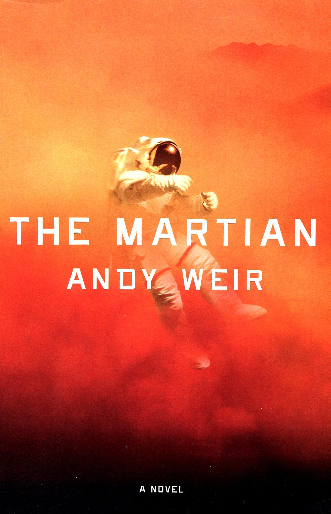

The Martian is a fictional story set in the near future about a mission to Mars that went wrong. Mark Watney is one of the first people to ever be on Mars. Then, in a tragic turn of events, a dust storm seperates him from the rest of the astronauts while they are trying to escape, stranding Mark on Mars. Mark then has to grow his own food and engineer his way to find a way home. On his journey he must overcome numerous obstacles such as how to grow food, travel the planet safely, and communicate to NASA. Will Mark escape or will he be the first person ever to die on Mars/
The Martian is set on the dust red planet, Mars! Several different areas on Mars are explored throughout the book, though they all look very similar.
Me: Hello, Mark. How are you?
Mark: Good, how are you?
Me: I'm good. What did it feel like when you were first left behind on Mars?
Mark: It was scary. I thought I might never come home again.
Me: How about when you established contact with Nasa? How did the feel?
Mark: That was an exciting milestone. It was important to my survival. Though they could be a little annoying.
Me: Was there a moment of panic when the MAV rocket lifted off?
Mark: There was. Since Nasa had me remove so much stuff from the rocket before launching it, I was worried it would fall apart with me in it!
Me: Finally, would you ever go back to Mars?
Mark: I don't know. I think I have spent more time on Mars than a guy could ever want!
I think the theme of this book is to never give up. Mark doesn't give up even when the Hab ruptures, when his communication with Nasa is severed, or when his plants all die.
Exposition - Mark is left on Mars
Rising Action - Mark plants potatoes and gets contact with Nasa
Climax - Mark travels to the MAV rocket
Falling Action - Mark gets picked up by the Ares 3 crew
Resolution - Mark is home on Earth